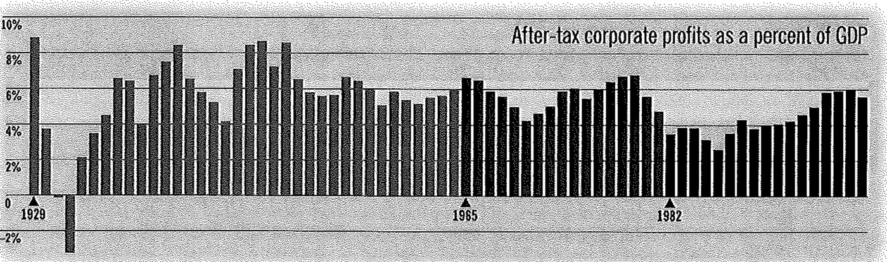
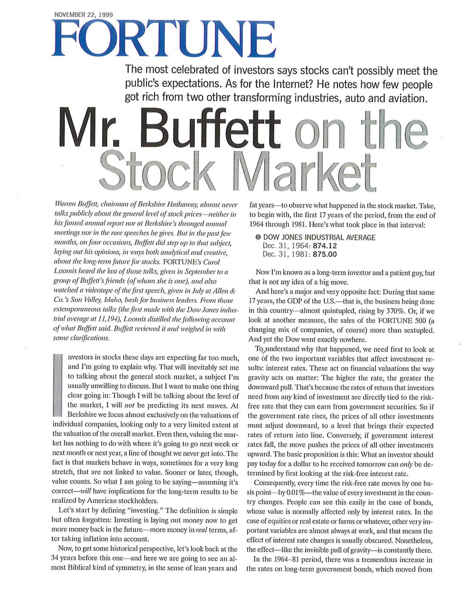
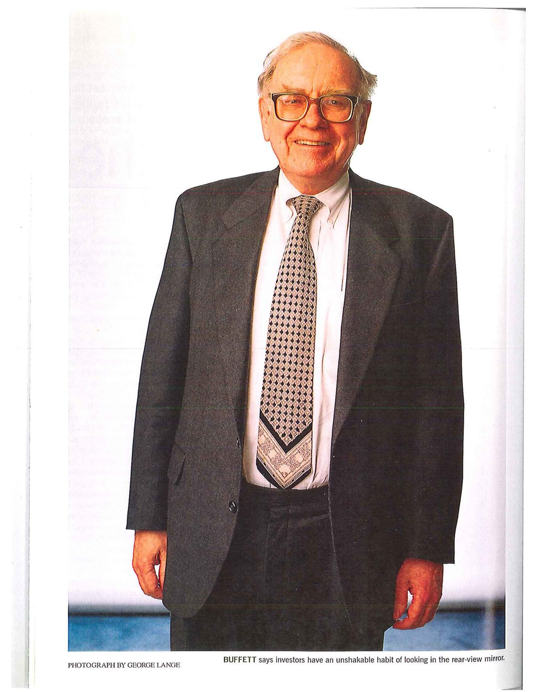
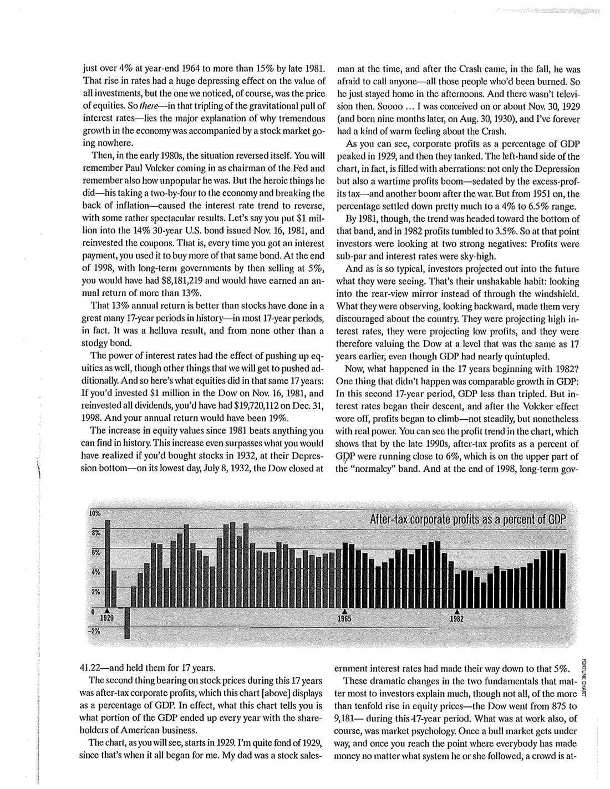
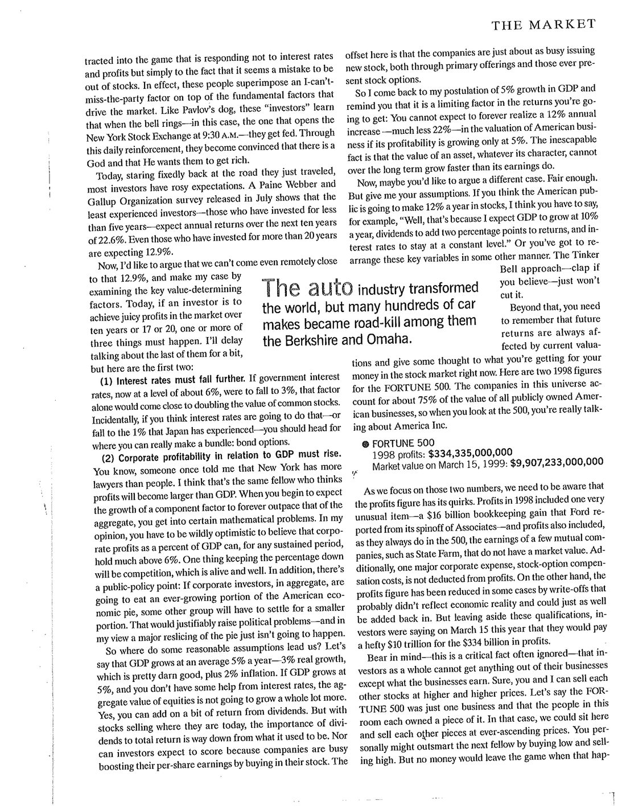
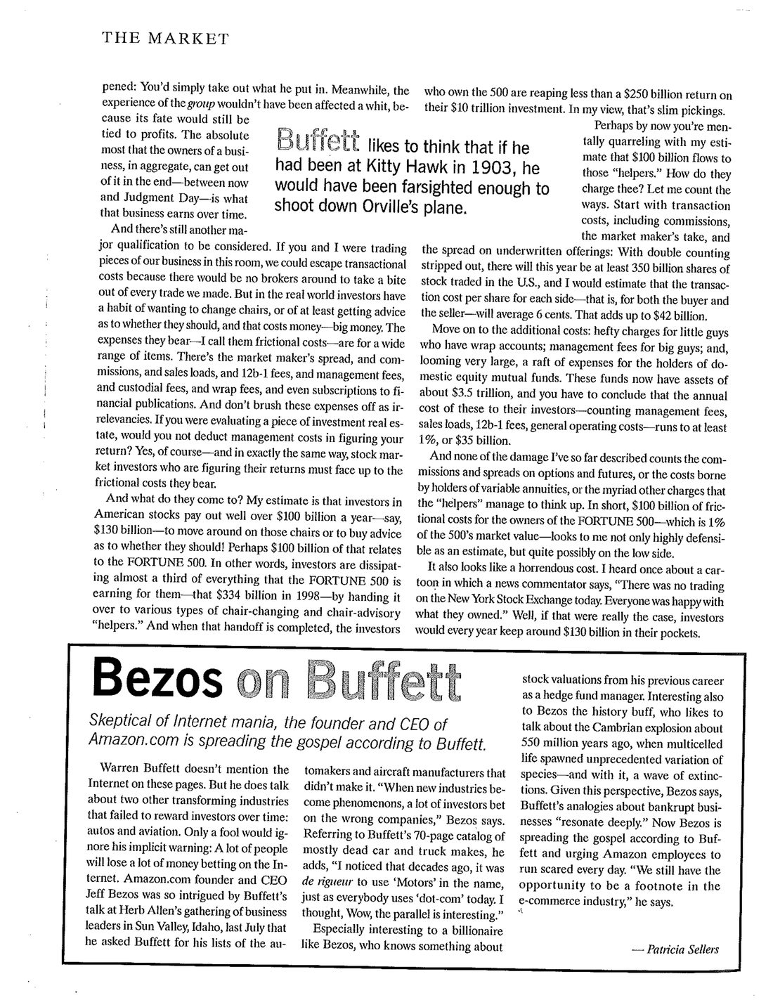
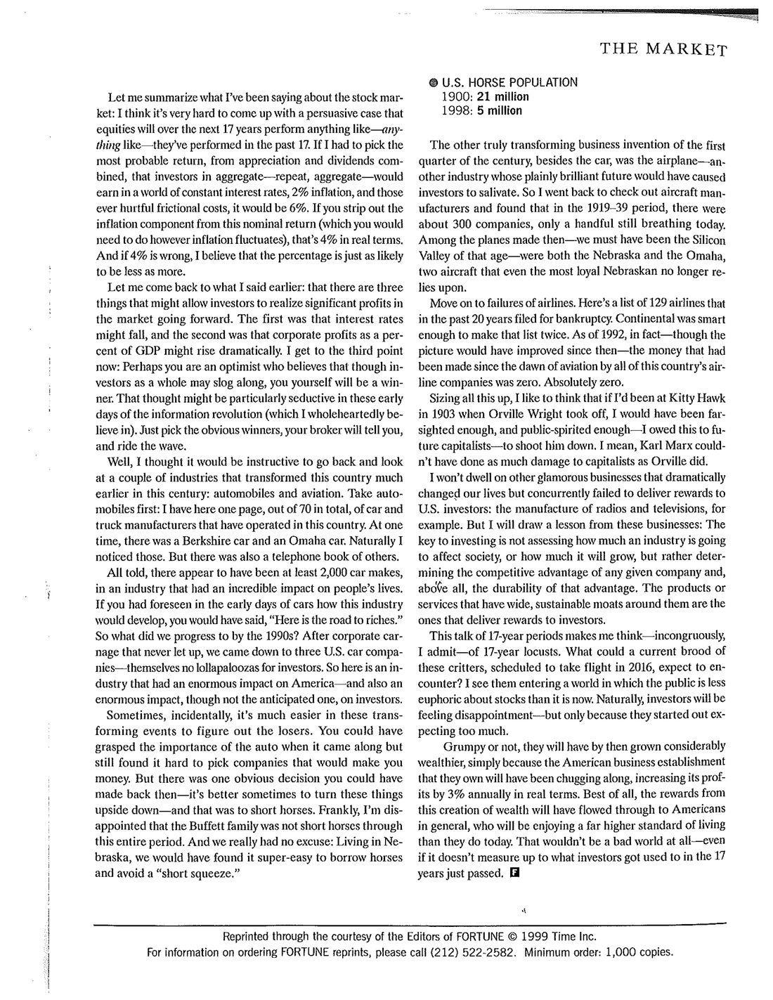

巴菲特 股市估值 原文为杂志扫描版 · 数据框重排为表
这是巴菲特极少公开谈「大盘」的一次：他把 1964—1998 分成两个十七年——前十七年道指从 874.12 走到 875.00（原地不动），GDP 却涨了 370%；后十七年道指从 875 走到 9,181，GDP 只涨不到三倍。同一套基本面为什么结果相反？他给出两个变量：利率是重力，长期国债收益率从 4% 涨到 15% 又落回 5%；税后企业利润占 GDP 的比重，长期就在 4%–6.5% 这条带子里。结论是冷冰冰的一串算术：GDP 年均 5%、利润占比顶到 6%、再扣掉每年 1,300 亿美元的摩擦成本，投资者整体未来十七年最可能拿到的是名义 6%、实际 4%。至于「选对行业就能赢」——他拿汽车（2,000 个品牌只剩 3 家）、飞机（300 家制造商、129 家航空公司破产、全行业累计利润为零）说明：关键不是行业影响多大，而是护城河能不能持久。
《财富》杂志编者按：这位最负盛名的投资者说，股票根本不可能满足公众的期望。至于互联网？他提醒你：在另外两个改变了世界的行业——汽车和航空——里，真正赚到钱的人少得可怜。
沃伦·巴菲特，伯克希尔·哈撒韦的董事长，几乎从不公开谈论股市的整体价格水平——无论是在他那份著名的年度报告里，还是在伯克希尔人头攒动的股东大会上，或是在他极少发表的演讲中。但在过去几个月里，巴菲特四次谈起这个话题，以既有分析又有创意的方式，阐明了他对股票长期前景的看法。《财富》的 Carol Loomis 听到了其中最后一场——九月，他对一群朋友（她本人是其中之一）所讲；也看了第一场的录像——那是七月在爱达荷州太阳谷（Sun Valley），Allen & Co. 为商界领袖举办的聚会上所作。Loomis 从这些即席演讲中（第一场发表时，道琼斯工业平均指数为 11,194 点）提炼出下面这份巴菲特发言的记录。巴菲特审阅了全文，并作了一些澄清。
CAROL LOOMIS: From those extemporaneous talks (the first made with the Dow Jones industrial average at 11,194), Loomis distilled the following account of what Buffett said.如今投资股票的人期望实在太高了，我要解释一下为什么。这就不可避免地要谈到股市整体——一个我通常不愿讨论的话题。但有一点我必须先说清楚：虽然我要谈市场的水平，但我不会去预测它下一步怎么走。在伯克希尔，我们几乎只关注单个公司的估值，对整体市场的估值只看非常有限的一点。即便如此，给市场估值与它下周、下个月、明年会往哪走毫无关系——这类念头我们从来不碰。事实是，市场的表现有时会在很长一段时间里与价值毫无关联。但价值迟早会起作用。所以我要讲的东西——如果它是对的——将关系到美国股东长期能实现的回报。
Investors in stocks these days are expecting far too much, and I'm going to explain why.让我们从"投资"的定义开始。定义很简单，但常常被忘掉：投资就是现在拿出钱，以便将来拿回更多的钱——更多的、扣掉通胀之后的实际购买力意义上的钱。
Investing is laying out money now to get more money back in the future—more money in real terms, after taking inflation into account.现在，为了获得一些历史视角，让我们回看今年之前的三十四年——在这里我们会看到一种近乎《圣经》式的对称，即荒年与丰年——看看股市里发生了什么。先看这三十四年里的前十七年，也就是从 1964 年底到 1981 年。这段时间里发生的事是：
| 道琼斯工业平均指数 | 收盘 |
|---|---|
| 1964 年 12 月 31 日 | 874.12 |
| 1981 年 12 月 31 日 | 875.00 |
| 十七年变化 | +0.88 点（+0.1%） |
原文此处为杂志插图框，此处按原文两个数字重排为表；「十七年变化」一行为译者计算。
我一向被认为是长期投资者、有耐心的人，但这不是我心目中"大涨"的样子。
Now I'm known as a long-term investor and a patient guy, but that is not my idea of a big move.而另一个重大且完全相反的事实是：同样在这十七年里，美国的 GDP——也就是在这个国家里发生的生意总量——几乎翻了五倍，增长了 370%。或者换个衡量方式：《财富》500 强的销售额（当然，这是不断变动的公司组合）增长了六倍多。而道指纹丝未动。
During that same 17 years, the GDP of the U.S.—that is, the business being done in this country—almost quintupled, rising by 370%.要理解这为什么会发生，我们必须先看影响投资结果的两个重要变量之一：利率。利率作用于金融估值，就像重力作用于物质：利率越高，向下的拉力越大。这是因为投资者要求任何一种投资提供的回报率，都直接与政府债券所提供的无风险利率挂钩。所以，政府利率一旦上升，所有其他投资的价格就必须向下调整，直到它们预期的回报率与之一致。反过来说，政府利率下降，就会把其他所有投资的价格推上去。基本命题是这样的：投资者今天该为明天收到的一美元付多少钱，只能通过先看无风险利率来确定。
These act on financial valuations the way gravity acts on matter: The higher the rate, the greater the downward pull.由此，无风险利率每变动一个基点——0.01%——全国每一项投资的价值都会变。这一点在债券上很容易看到，债券的价值通常只受利率影响。而在股票、房地产、农场等资产上，几乎总有其他非常重要的变量在起作用，这意味着利率变动的影响通常被掩盖了。尽管如此，这种影响——就像看不见的重力牵引——始终存在。
Nonetheless, the effect—like the invisible pull of gravity—is constantly there.在 1964—1981 这段时期，长期政府债券的利率大幅上升，从 1964 年底的略高于 4%，涨到 1981 年底的超过 15%。利率上升对所有投资的价值都有巨大的压制作用，而我们当然注意到的是股票价格。所以——就在利率这股引力翻了三倍这件事里——藏着"经济大幅增长、股市原地不动"的主要解释。
So there—in that tripling of the gravitational pull of interest rates—lies the major explanation of why tremendous growth in the economy was accompanied by a stock market going nowhere.然后，在 1980 年代初，情况反转了。你还记得 Paul Volcker 出任美联储主席，也记得他当时多么不受欢迎。但他做的那些了不起的事——拿一根两乘四的木棍狠狠敲打经济、打断了通胀的脊梁骨——让利率的趋势逆转，结果相当壮观。假设你在 1981 年 11 月 16 日发行的 14% 三十年美国国债上投入 100 万美元，并把票息再投资——也就是每次收到利息，就用它去买同一只债券。到 1998 年底，长期国债的收益率已降到 5%，你手上会有 8,181,219 美元，年化回报超过 13%。
Let's say you put $1 million into the 14% 30-year U.S. bond issued Nov. 16, 1981, and reinvested the coupons.那个 13% 的年化回报，比股票在历史上很多个十七年里的表现都更好——事实上是大多数十七年。这是个了不起的结果，而它来自一样再古板不过的东西：债券。
That 13% annual return is better than stocks have done in a great many 17-year periods in history.利率的力量也把股票推了上去，当然还有其他我要讲到的因素在额外推动。那么，同样这十七年里股票的表现是：如果你在 1981 年 11 月 16 日把 100 万美元投入道指，并把股息全部再投资，到 1998 年 12 月 31 日你会有 19,720,112 美元，年化回报 19%。
If you'd invested $1 million in the Dow on Nov. 16, 1981, and reinvested all dividends, you'd have had $19,720,112 on Dec. 31, 1998.1981 年以来股票市值的增长，超过你在历史上能找到的任何一段。这一涨幅甚至超过你在 1932 年大萧条底部买入股票所能得到的——在最低的那一天，1932 年 7 月 8 日，道指收于 41.22 点——然后持有十七年。
This increase even surpasses what you would have realized if you'd bought stocks in 1932, at their Depression bottom—on its lowest day, July 8, 1932, the Dow closed at 41.22—and held them for 17 years.第二个影响这十七年股价的因素，是税后企业利润，上图把它画成占 GDP 的百分比。实际上，这张图告诉你的是：每年 GDP 中有多大一块最终落到了美国企业的股东手里。

这张图从 1929 年开始。我挺喜欢 1929 年，因为我的一切就是从那时开始的。我父亲当年是个股票推销员，崩盘那个秋天来了之后，他不敢给任何人打电话——那些人全都被烧过。于是他每天下午就待在家里。那时候还没有电视。于是……我大约是在 1929 年 11 月 30 日被怀上的（九个月后，1930 年 8 月 30 日出生），所以我对那场崩盘一直有种亲切的暖意。
I was conceived on or about Nov. 30, 1929 (and born nine months later, on Aug. 30, 1930), and I've forever had a kind of warm feeling about the Crash.如你所见，企业利润占 GDP 的比重在 1929 年见顶，随后一路栽下去。事实上这张图的左半边充满了异常：不仅有萧条，还有战时的利润繁荣——被超额利润税压着——以及战后的又一轮繁荣。但从 1951 年起，这个比重基本稳定在 4% 到 6.5% 的区间内。
But from 1951 on, the percentage settled down pretty much to a 4% to 6.5% range.不过到 1981 年，趋势已经走向这个区间的下沿，1982 年利润更是跌到 3.5%。所以在那个时点，投资者面对两个强烈的负面因素：利润低于正常水平，利率高得离谱。
By 1981, though, the trend was headed toward the bottom of that band, and in 1982 profits tumbled to 3.5%.而事情往往就是这样：投资者把眼前看到的东西外推到未来。这是他们改不掉的习惯——盯着后视镜，而不是透过挡风玻璃看路。他们向后看所观察到的一切，让他们对这个国家非常沮丧。他们预期高利率将持续，预期低利润将持续，于是给道指的估值水平与十七年前一模一样，尽管 GDP 已经几乎翻了五倍。
That's their unshakable habit: looking into the rear-view mirror instead of through the windshield.那么，从 1982 年开始的十七年又发生了什么？有一件事没有发生，那就是与之前相当的经济增长：这第二个十七年里，GDP 增长不到三倍。但利率开始下行，而 Volcker 效应消退之后，利润开始爬升——不是稳步爬，但确实很有力量。你可以在图上看到这个利润趋势：到 1990 年代末，税后利润占 GDP 的比重已接近 6%，处在"正常区间"的上沿。而到 1998 年底，长期政府债券收益率已经降到那个 5%。
In this second 17-year period, GDP less than tripled. But interest rates began their descent, and after the Volcker effect wore off, profits began to climb—not steadily, but nonetheless with real power.这两个对投资者最要紧的基本面的剧烈变化，解释了这十七年里股票价格十倍以上涨幅中的大部分——道指从 875 点涨到 9,181 点——但并没有解释全部。当时还在起作用的，当然是市场心理。一旦牛市启动，一旦到了这个地步：无论用什么方法都赚到了钱，人群就会被吸引进场——他们回应的不是利率和利润，而仅仅是"不持股好像就是个错误"这一点。实际上，这些人是在驱动市场的基本面因素之上，又叠加了一个"我不能错过这场派对"的因素。就像巴甫洛夫的狗，这些"投资者"学会了：铃一响——在这里是上午 9:30 纽约证券交易所开盘的铃声——就有饭吃。通过这种日复一日的强化，他们确信世上有个上帝，而且上帝希望他们发财。
Once a bull market gets under way, and once you reach the point where everybody has made money no matter what system he or she followed, a crowd is attracted into the game that is responding not to interest rates and profits but simply to the fact that it seems a mistake to be out of stocks.今天，大多数人死死盯着刚刚走过的那段路，对未来满怀乐观。七月发布的一项 Paine Webber 与盖洛普（Gallup）调查显示：投资经验最浅的那批人——入市不足五年——预期未来十年年化回报 **22.6%**。即便是投资超过二十年的人，预期的也有 **12.9%**。
A Paine Webber and Gallup Organization survey released in July shows that the least experienced investors—those who have invested for less than five years—expect annual returns over the next ten years of 22.6%. Even those who have invested for more than 20 years are expecting 12.9%.现在我想论证：我们根本不可能接近那个 12.9%，办法是逐一检视那些决定价值的关键因素。今天，投资者若想在市场里获得令人垂涎的利润——无论是十年、十七年还是二十年——必须发生以下三件事中的一件或几件。第三件我先放一放，先说前两件：
Today, if an investor is to achieve juicy profits in the market over ten years or 17 or 20, one or more of three things must happen.**（1）利率必须继续下降。** 如果政府利率从现在约 6% 的水平降到 3%，单这一项就足以让普通股的价值接近翻倍。顺便说一句，如果你真认为利率会走到那一步——或者降到日本那样的 1%——那你该去一个能真正大赚一笔的地方：债券期权。
If government interest rates, now at a level of about 6%, were to fall to 3%, that factor alone would come close to doubling the value of common stocks.**（2）企业利润占 GDP 的比重必须上升。** 你知道，有人曾告诉我纽约的律师比人还多。我猜就是同一个人认为利润会比 GDP 还大。当你开始期待"一个组成部分的增长永远快于整体的增长"，你就进入了某些数学上的难题。在我看来，要相信企业利润占 GDP 的比重能长期大幅高于 6%，你得极度乐观才行。压住这个比重的一个因素就是竞争——它活得很好。此外还有一个公共政策的层面：如果企业投资者作为一个整体，要吃下越来越大的一块美国经济蛋糕，其他群体就必须接受更小的一块。这在政治上理所当然会引发问题——而在我看来，大幅重新切分蛋糕的事，是不会发生的。
In my opinion, you have to be wildly optimistic to believe that corporate profits as a percent of GDP can, for any sustained period, hold much above 6%.那么，一些合理的假设会把我们引向哪里？假设 GDP 年均增长 5%——实际增长 3%（这已经相当不错了），加上 2% 的通胀。如果 GDP 增长 5%，又没有利率方面的助力，那么股票的整体市值不会增长太多。是的，你还可以加上一点股息回报。但以今天股票的价格水平，股息对总回报的重要性已远不如从前。投资者也不能指望靠公司回购股票来推高每股收益——因为对冲掉这一效果的是，公司同样忙于发行新股，既有一级市场增发，也有那些永远存在的股票期权。
Let's say that GDP grows at an average 5% a year—3% real growth, which is pretty darn good, plus 2% inflation.所以我又回到"GDP 增长 5%"这个假设，并提醒你：这是你所能获得回报的限制因素。如果美国企业的盈利能力只有 5% 的增长，你就不可能永远期望它的估值每年增长 12%——更不用说 22%。一个无法回避的事实是：一项资产的价值，无论它是什么性质，长期都不可能比它的盈利增长得更快。
The inescapable fact is that the value of an asset, whatever its character, cannot over the long term grow faster than its earnings do.当然，你也许想提出另一套论证。可以。但请把你假设的变量给我。如果你认为美国公众能从股票上每年赚到 12%，我想你就得这么说："嗯，那是因为我预期 GDP 每年增长 10%，股息能给回报再添两个百分点，而利率保持不变。"或者你得把这些关键变量按别的方式重新摆一遍。那种"小叮当式"的做法——只要你相信就拍拍手——是过不了关的。
The Tinker Bell approach—clap if you believe—just won't cut it.除此之外，你还必须记住：未来的回报总是受当前估值影响。所以要想想，你此刻在股市里花的钱买到了什么。这里是《财富》500 强的两个 1998 年数字。这个集合里的公司约占美国全部上市企业总市值的 75%，所以当你看这 500 家时，你其实是在看"美国公司"。
原文为杂志方框，数字照录。
当我们盯住这两个数字时，必须意识到利润这个数字有它的古怪之处。1998 年的利润里包含一项非常特殊的科目——福特因分拆 Associates 而计入的约 160 亿美元账面收益；利润里也一向包含少数几家没有市场价值的互助型公司（例如 State Farm）的盈利。此外，一项重要的公司费用——股票期权补偿成本——并没有从利润里扣除。另一方面，利润数字在某些情况下又被那些大概并不反映经济现实的减值冲销压低过，那些其实也可以加回来。但撇开这些限定不谈，投资者在今年 3 月 15 日等于是在说：他们愿意为这 3,340 亿美元的利润，付出高达 **10 万亿美元** 的价钱。
But leaving aside these qualifications, investors were saying on March 15 this year that they would pay a hefty $10 trillion for the $334 billion in profits.请记住一个常被忽略的关键事实：作为一个整体，投资者从企业身上能拿到的，不可能超过企业本身赚到的。当然，你和我可以互相以越来越高的价格倒卖股票。假设《财富》500 强只是一家企业，而在座每个人拥有它的一部分。那么，我们完全可以坐在这里，以不断上涨的价格互相买卖。你个人也许能靠低买高卖比别人聪明一把。但这件事发生时，并没有钱离开这个游戏：你拿走的只是别人放进去的。与此同时，这群人整体的处境一点没变，因为他们的命运仍然系于利润。一家企业的所有者作为一个整体，从现在到审判日，所能拿到的绝对上限，就是这家企业长期所赚到的。
The absolute most that the owners of a business, in aggregate, can get out of it in the end—between now and Judgment Day—is what that business earns over time.还有一点必须考虑进来。如果你我在这间屋子里交易我们企业的份额，我们可以避开交易成本，因为身边没有经纪人在每笔交易上咬一口。但在真实世界里，投资者有个习惯：总想换个座位，或者至少想找人告诉自己该不该换——而这要花钱，花大钱。他们所承担的费用——我称之为"摩擦成本"（frictional costs）——涵盖一大堆名目：做市商的买卖价差、佣金、销售附加费、12b-1 费用、管理费、托管费、打包账户费，甚至包括订阅财经刊物。别把这些开销当成无关紧要的小事。如果你在评估一处投资性房地产，难道你不会在计算回报时扣掉管理成本吗？当然会。那么同理，股市投资者在计算自己的回报时，也必须正视他们所承担的摩擦成本。
If you were evaluating a piece of investment real estate, would you not deduct management costs in figuring your return?这些成本加起来有多少？我的估计是：美国股票投资者每年付出的远远超过 1,000 亿美元——就说 1,300 亿美元吧——用来在座位上挪来挪去，或者用来买"该不该挪"的建议！其中大约 1,000 亿美元与《财富》500 强有关。换句话说，投资者把《财富》500 强为他们赚到的东西——1998 年那 3,340 亿美元——的将近三分之一，交给了各种"换座位"和"换座位顾问"的"帮手"。等这道手交完之后，拥有这 500 家的投资者，在 10 万亿美元的投资上拿到的回报不足 2,500 亿美元。在我看来，这是很寒酸的收获。
In other words, investors are dissipating almost a third of everything that the FORTUNE 500 is earning for them—that $334 billion in 1998.也许你现在正在心里跟我争那 1,000 亿美元的估算。"他们是怎么向你收费的？让我一一数来。"先看交易成本，包括佣金、做市商赚的那一块、以及承销发行的价差：剔除重复计算后，今年美国至少会有 3,500 亿股股票成交，而我估计每股每一方——也就是买方和卖方都算——的交易成本平均为 6 美分。加起来是 420 亿美元。
With double counting stripped out, there will this year be at least 350 billion shares of stock traded in the U.S., and I would estimate that the transaction cost per share for each side—that is, for both the buyer and the seller—will average 6 cents. That adds up to $42 billion.再看其他成本：给小客户的打包账户收取的高额费用；给大客户的管理费；以及规模非常庞大的、国内股票型共同基金持有人承担的一堆费用。这些基金目前资产约 3.5 万亿美元，你不得不承认，它们对持有人的年度成本——算上管理费、销售附加费、12b-1 费用和一般运营成本——至少是 1%，也就是 350 亿美元。
These funds now have assets of about $3.5 trillion, and you have to conclude that the annual cost of these to their investors … runs to at least 1%, or $35 billion.而我上面说的这些损害，都还没有算上期权和期货的佣金与价差，没有算上变额年金持有人承担的成本，也没有算上那些"帮手"想得出来的五花八门的收费。一句话：《财富》500 强的所有者承担 1,000 亿美元摩擦成本——相当于这 500 家市值的 1%——在我看来不仅是个站得住脚的估算，而且很可能还偏低了。
In short, $100 billion of frictional costs for the owners of the FORTUNE 500—which is 1% of the 500's market value—looks to me not only highly defensible as an estimate, but quite possibly on the low side.这也是一笔可怕的开销。我曾听说一幅漫画，里面的新闻评论员说："今天纽约证券交易所没有任何交易。每个人都对自己拥有的东西很满意。"好吧，如果真是那样，投资者每年就能把大约 1,300 亿美元留在口袋里。
"There was no trading on the New York Stock Exchange today. Everyone was happy with what they owned."让我把关于股市说过的话总结一下：我认为，很难提出一个有说服力的论证来说明未来十七年股票的表现会像——像——过去十七年那样。如果非要我挑一个最可能的回报率（股价增值加股息合计），在利率不变、通胀 2%、以及那些永远令人痛苦的摩擦成本的世界里，投资者作为一个整体——再说一遍，整体——能挣到的，是 **6%**。把通胀成分从这名义回报里剥掉（无论通胀怎么波动，你都该这么做），实际回报就是 **4%**。而如果 4% 是错的，我认为这个数字往下修和往上修的可能性一样大。
If I had to pick the most probable return, from appreciation and dividends combined, that investors in aggregate—repeat, aggregate—would earn in a world of constant interest rates, 2% inflation, and those ever hurtful frictional costs, it would be 6%.让我回到前面说过的：有三件事可能让投资者在未来获得可观的市场利润。第一是利率可能下降，第二是企业利润占 GDP 的比重可能大幅上升。现在说第三点：也许你是个乐观主义者，相信即便投资者整体只能艰难跋涉，你自己仍会是赢家。在信息革命的早期，这种想法可能格外诱人（我完全相信这场革命）。你的经纪人会告诉你：挑出明显的赢家，跟着浪走就行。
Perhaps you are an optimist who believes that though investors as a whole may slog along, you yourself will be a winner.那么，我想回过头去看两个在本世纪更早时候改变了这个国家的行业，会很有启发：汽车和航空。先说汽车。我手上有整整七十页的清单，这里只放一页——美国曾经运营过的轿车与卡车制造商。有那么一个时候，既有一款"伯克希尔"汽车，也有一款"奥马哈"汽车。我当然注意到了这两个。除此之外，还有一整本电话簿那么多的其他品牌。总计看来，至少出现过 **2,000 个汽车品牌**——而这个行业对人们生活的影响是难以置信的。如果你在汽车刚出现的年代就预见到这个行业会如何发展，你一定会说："这就是通往财富的路。"
All told, there appear to have been at least 2,000 car makes, in an industry that had an incredible impact on people's lives.那么到 1990 年代，局面演变成了什么样？在一场从未停歇的企业屠杀之后，只剩下了三家美国汽车公司——而它们本身对投资者来说也算不上什么大惊喜。所以这是一个对美国产生了巨大影响的行业——同时也对投资者产生了巨大影响，只不过不是人们预期的那个方向。
After corporate carnage that never let up, we came down to three U.S. car companies—themselves no lollapaloozas for investors.顺便说一句，在这类变革性的事件里，有时候找出输家要容易得多。你完全可以在汽车出现时就看懂它的重要性，却仍然无法挑出哪些公司能让你赚钱。但当时有一个显而易见可以做的决定——有些事反过来看会更好——那就是**做空马**。坦白说，我很遗憾巴菲特家族没能在那整个时期一直做空马匹。而我们实在没什么借口：住在内布拉斯加，借马简直容易得要命，根本不用担心什么"逼空"。
But there was one obvious decision you could have made back then—it's better sometimes to turn these things upside down—and that was to short horses.原文为杂志方框，数字照录。
本世纪头二十五年里，另一项真正具有变革性的商业发明，除汽车之外就是飞机——又是一个前景显然辉煌、足以让投资者垂涎的行业。于是我回去查了飞机制造商，发现在 1919—1939 年间大约有 **300 家**公司，到今天还在呼吸的只剩寥寥几家。当时生产的飞机里——我们那会儿想必就是那个年代的硅谷——既有"内布拉斯加"号，也有"奥马哈"号；这两款飞机，哪怕是最忠诚的内布拉斯加人，如今也不再指望它们了。
So I went back to check out aircraft manufacturers and found that in the 1919-39 period, there were about 300 companies, only a handful still breathing today.再看航空公司的失败史。这里有 **129 家**在过去二十年里申请破产的航空公司名单。Continental 很聪明，竟然上了两次。事实上，截至 1992 年——尽管那之后情况有所改善——自航空业诞生以来，全美国航空公司累计赚到的钱是**零**。绝对的零。
As of 1992, in fact—though the picture would have improved since then—the money that had been made since the dawn of aviation by all of this country's airline companies was zero. Absolutely zero.把这些盘点一遍，我倒愿意相信：如果我 1903 年在基蒂霍克（Kitty Hawk）亲眼看着奥维尔·莱特起飞，我会足够有远见、也足够有公益心——毕竟我得对未来的资本家负责——把他打下来。我是说，卡尔·马克思对资本家造成的破坏，都比不上奥维尔·莱特。
I mean, Karl Marx couldn't have done as much damage to capitalists as Orville did.我不多谈其他那些曾显著改变我们生活、却同时对美国投资者毫无回报的行业——比如收音机和电视的制造。但我要从这些行业里提炼一条教训：**投资的关键，不在于评估一个行业将对社会产生多大影响、或者它会增长多少，而在于确定某家公司的竞争优势，而且首先在于这种优势的持久性。** 那些被宽阔、可持续的"护城河"（moat）环绕的产品或服务，才是能给投资者带来回报的东西。
The key to investing is not assessing how much an industry is going to affect society, or how much it will grow, but rather determining the competitive advantage of any given company and, above all, the durability of that advantage.说起"十七年"，这让我——虽然有点不搭调——想到了十七年蝉。今年这一代的这些小家伙，预定在 2016 年破土起飞，它们会撞见一个什么样的世界？我看到它们进入的世界里，公众对股票的狂热不如现在。投资者自然会感到失望——但那只是因为他们起点太高。
This talk of 17-year periods makes me think—incongruously, I admit—of 17-year locusts.不管高兴不高兴，到那时候他们会富得多，理由很简单：他们拥有的那个美国商业体系一直在吭哧吭哧往前走，实际利润每年增长 3%。最妙的是，这种财富创造的好处会流向美国大众，让他们过上比今天高得多的生活水平。那根本不是一个糟糕的世界——即便它比不上投资者刚刚习惯的那十七年。
That wouldn't be a bad world at all—even if it doesn't measure up to what investors got used to in the 17 years just passed.对互联网狂热心存怀疑的 Amazon.com 创始人兼 CEO，正在传播"巴菲特福音"。
Skeptical of Internet mania, the founder and CEO of Amazon.com is spreading the gospel according to Buffett.这几页里巴菲特没有提到互联网。但他谈到了另外两个曾改变世界、却长期未能给投资者带来回报的行业：汽车与航空。只有傻瓜才会忽略他隐含的警告：很多人会在押注互联网时亏掉很多钱。今年七月，在爱达荷州太阳谷 Herb Allen 召集的商界领袖聚会上，Amazon.com 创始人兼 CEO 杰夫·贝索斯被巴菲特的演讲深深吸引，以至于他向巴菲特索要了那份"没活下来的汽车制造商与飞机制造商"名单。"当新兴行业成为现象时，很多投资者押错了公司，"贝索斯说。提到巴菲特那份共七十页、大多已死掉的轿车与卡车品牌目录，他补充道："我注意到，几十年前，在公司名字里带 'Motors' 是一种时髦，就像今天人人都叫 'dot-com'。我当时想：哇，这个对照太有意思了。"
He asked Buffett for his lists of the automakers and aircraft manufacturers that didn't make it.对一个像贝索斯这样的亿万富翁来说，这事格外有意思——他从前做对冲基金经理，懂一些股票估值。对身为历史爱好者的贝索斯来说也一样：他喜欢谈论约 5.5 亿年前的寒武纪大爆发，那时多细胞生命催生出前所未有的物种多样性——随之而来的还有一波灭绝。有了这个视角，贝索斯说，巴菲特关于企业破产的类比"引起深深的共鸣"。如今贝索斯正在传播"巴菲特福音"，并要求 Amazon 员工每天都保持危机感。"我们仍然有机会成为电商行业里的一个脚注，"他说。
Given this perspective, Bezos says, Buffett's analogies about bankrupt businesses "resonate deeply."原文是杂志版面扫描件，正文里的插图（开篇整页人物照、行业配图、侧栏人物头像，以及道指 / 《财富》500 强 / 马匹数量三个数据方框）都在这六页里。为避免裁切误差与版权问题，这里整页收录，不另行裁图；正文中的那张「税后企业利润占 GDP 百分比」柱状图已单独放大放在首次引用处。
 第 1 页 · 开篇与道指方框 |
 第 2 页 · 整页人物照（George Lange 摄） |
 第 3 页 · 利润占 GDP 柱状图 |
 第 4 页 · 《财富》500 强方框 |
 第 5 页 · 行业配图 / 马匹方框 / 贝索斯侧栏 |
 第 6 页 · 结尾与版权声明 |
点击第 1 页可打开伯克希尔官网托管的原始 PDF。扫描件版权归 FORTUNE / Time Inc. 所有（© 1999），此处仅作研究对照。
原文是《财富》1999-11-22 的杂志版面扫描件（6 页，无文字层，无脚注）。我用 OCR 逐页取字，再对关键数字做 600dpi 放大重扫核对——其中一处 OCR 原本读成「$40 trillion」，放大重扫后确认是「$10 trillion」，与后文「their $10 trillion investment」对上，已按 10 万亿翻译。核验又做了一轮独立反查，结果分为三类，其中第 3 类有四处是本文必须提醒读者的。
✅ 与独立来源一致
⚠️ 有出入（四处，引用时务必带上）
❓ 只有巴菲特自己那份清单能作证（无法外部核实）
📌 翻译处理说明
一、原文形态：这是 FORTUNE 1999 年 11 月 22 日一期的杂志版面扫描件（6 页），由伯克希尔·哈撒韦以"Reprinted through the courtesy of the Editors of FORTUNE"的方式收录在 1999 年年报中。版权归 Time Inc. 所有（© 1999）。本页为中文研究与学习用途的全文中英对照，原文著作权归原作者与出版方。
二、作者与来源结构：文章标题《Mr. Buffett on the Stock Market》，内容由 FORTUNE 的 Carol Loomis 从巴菲特四次即席演讲中整理（第一次在 1999 年 7 月爱达荷州太阳谷 Allen & Co. 的商界领袖聚会，当时道指 11,194 点；最后一次是 9 月对一群朋友所讲）。巴菲特本人审阅全文并作了补充澄清。正文以第一人称"我"（巴菲特）叙述，开头的编者按为 Loomis 的第三人称说明。第 5 页右下角另有一篇 Patricia Sellers 撰写的旁注《Bezos on Buffett》。
三、原文扫描件地址：berkshirehathaway.com/1999ar/FortuneMagazine.pdf（伯克希尔官网公开托管）。
四、图表处理：原文的核心图表「After-tax corporate profits as a percent of GDP（1929–1999）」已从 200dpi 扫描件裁切、按原位置收录（见图 1），图注中说明了它与现行修订数据的口径差异。原第 2 页整页人物照（摄影：George Lange）与第 5 页的汽车/飞机小图因版权与扫描质量原因未收录；文中所有数字均已保留。